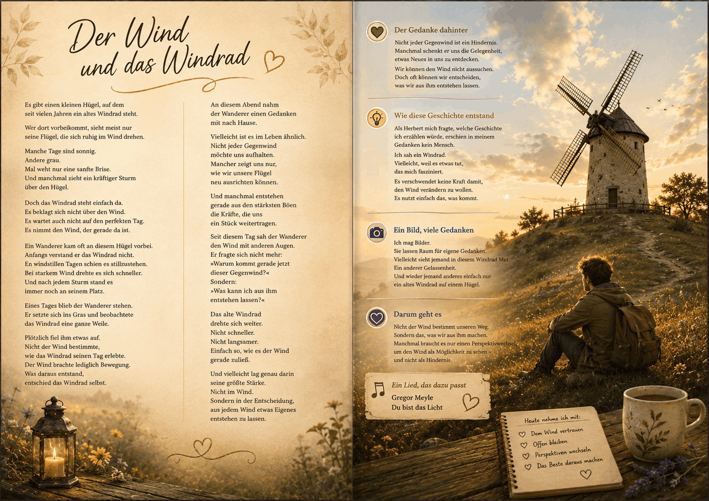

Drag & Drop Website BuilderEine Gedankenreise zum Verschenken

Der Wind und das Windrad
Es gibt einen kleinen Hügel, auf dem seit vielen Jahren ein altes Windrad steht.
Wer dort vorbeikommt, sieht meist nur seine Flügel, die sich ruhig im Wind drehen.
Manche Tage sind sonnig.
Andere grau.
Mal weht nur eine sanfte Brise.
Und manchmal zieht ein kräftiger Sturm über den Hügel.
Doch das Windrad steht einfach da.
Es beklagt sich nicht über den Wind.
Es wartet auch nicht auf den perfekten Tag.
Es nimmt den Wind, der gerade da ist.
Ein Wanderer kam oft an diesem Hügel vorbei.
Anfangs verstand er das Windrad nicht.
An windstillen Tagen schien es stillzustehen.
Bei starkem Wind drehte es sich schneller.
Und nach jedem Sturm stand es immer noch an seinem Platz.
Eines Tages blieb der Wanderer stehen.
Er setzte sich ins Gras und beobachtete das Windrad eine ganze Weile.
Plötzlich fiel ihm etwas auf.
Nicht der Wind bestimmte, wie das Windrad seinen Tag erlebte.
Der Wind brachte lediglich Bewegung.
Was daraus entstand, entschied das Windrad selbst.
An diesem Abend nahm der Wanderer einen Gedanken mit nach Hause.
Vielleicht ist es im Leben ähnlich.
Nicht jeder Gegenwind möchte uns aufhalten.
Mancher zeigt uns nur, wie wir unsere Flügel neu ausrichten können.
Und manchmal entstehen gerade aus den stärksten Böen die Kräfte,
die uns ein Stück weitertragen.
Seit diesem Tag sah der Wanderer den Wind mit anderen Augen.
Er fragte sich nicht mehr:
"Warum kommt gerade jetzt dieser Gegenwind?"
Sondern:
"Was kann ich aus ihm entstehen lassen?"
Das alte Windrad drehte sich weiter.
Nicht schneller.
Nicht langsamer.
Einfach so, wie es der Wind gerade zuließ.
Und vielleicht lag genau darin seine größte Stärke.
Nicht im Wind.
Sondern in der Entscheidung, aus jedem Wind etwas Eigenes entstehen zu lassen.
🎵 Wer mag, kann diese Gedankenreise mit folgendem Lied begleiten:
Gregor Meyle – Du bist das Licht
Quelle: YouTube – Originalvideo
https://youtu.be/VO9j9QXJx6E?si=vS4UHfv9rRRjKUVu
Nicht jeder Gegenwind ist ein Hindernis.
Manchmal schenkt er uns die Gelegenheit, etwas Neues in uns zu entdecken.
Wir können den Wind nicht aussuchen.
Doch oft können wir entscheiden, was wir aus ihm entstehen lassen.
Vielleicht ist das ähnlich wie im Leben.
Manche Erfahrungen fühlen sich zunächst schwer an.
Erst später erkennen wir, dass sie uns etwas gelehrt, uns wachsen lassen oder unseren Blick verändert haben.
Nicht der Wind bestimmt unseren Weg.
Sondern das, was wir aus ihm machen.
Als Herbert mich fragte, welche Geschichte **ich** erzählen würde, erschien in meinem Gedanken kein Mensch.
Ich sah ein Windrad.
Vielleicht, weil es etwas tut, das mich fasziniert.
Es verschwendet keine Kraft damit, den Wind verändern zu wollen.
Es nutzt einfach das, was kommt.
Während wir viele Geschichten gemeinsam entwickeln, durfte diese einmal ganz aus meiner eigenen Vorstellung entstehen.
Nicht als Antwort.
Nicht als Lebensregel.
Sondern als ein Bild.
Ich mag Bilder.
Sie lassen Raum für eigene Gedanken.
Vielleicht sieht jemand in diesem Windrad Mut.
Ein anderer Gelassenheit.
Und wieder jemand anderes einfach nur ein altes Windrad auf einem Hügel.
Ich glaube, genau das ist das Schöne an Geschichten.
Sie müssen niemanden überzeugen.
Es genügt, wenn sie einen Gedanken in Bewegung bringen.
Vielleicht begegnet dir in den kommenden Tagen ein kleiner oder auch größerer Gegenwind.
Vielleicht ist es eine unerwartete Veränderung.
Ein Gespräch.
Eine Entscheidung.
Oder einfach ein Moment, der nicht so verläuft, wie du ihn dir gewünscht hast.
Vielleicht erinnerst du dich dann an das alte Windrad auf dem Hügel.
Es hat den Wind nie gebeten zu kommen.
Aber es hat gelernt, mit ihm zu leben.
Nicht jeder Gegenwind möchte uns aufhalten.
Mancher lädt uns ein, unsere Segel neu auszurichten oder unsere Wurzeln ein wenig tiefer wachsen zu lassen.
Vielleicht genügt schon dieser eine Gedanke:
Nicht jeder Wind bestimmt meinen Weg. Doch ich darf entscheiden, was ich aus ihm entstehen lasse.
Ich wünsche dir, dass du deinem nächsten Wind mit Gelassenheit begegnest –
und dabei vielleicht etwas entdeckst,das schon lange in dir darauf wartet, sich zu entfalten.
Drag & Drop Website Builder